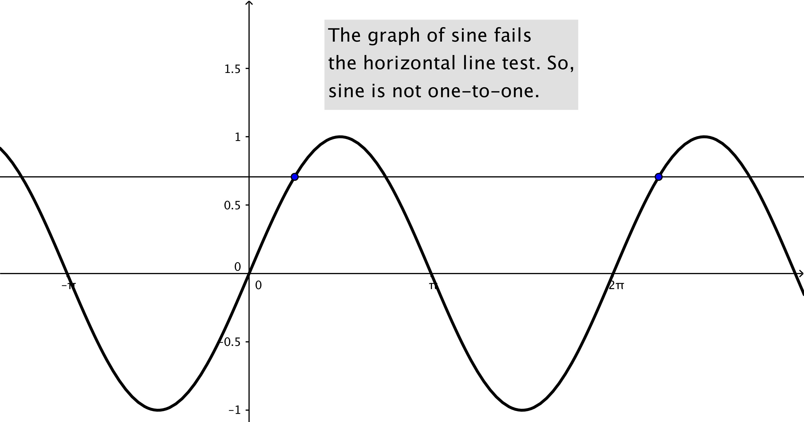
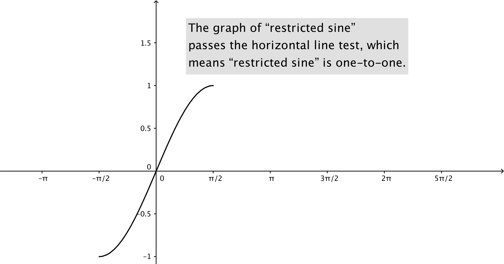

This statement is false: the correct statement is \(\sin ^{-1}(0) = 0\). (Why?)
To produce the inverse sine we first restrict the
domain of sine, to the interval \([-\pi /2, \pi /2]\), to produce an invertible function: So, the
range of \(\sin ^{-1}\) is \([-\pi /2, \pi /2]\). Since \(\pi \) is not in this range, \(\pi \), is never a possible output of \(\sin ^{-1}\).
Spoiler Alert: the sine function is not invertible since its graph fails the horizontal line test.

